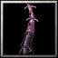

織田家臣 蜂須賀小六是在美濃地區活躍的“夜盜”。也就是強盜，好聽一點叫做野武士，沒有找到雇用他們的主子的軍隊，難聽一點就說是趁著夜色出沒搶錢的山大王 。
敏捷型近戰英雄
法術 ：Ａ 輔助 ：Ｂ 力量：26+2.10 敏捷：27+2.70（主要） 智慧：19+2.00 Ｗ[主動] 食腐群
派出一群扇狀飛出的蝙蝠，可對直線800距離上的敵人造成[200/300/400/500]傷害。 區域起始範圍100，擴散至300。
耗 魔[100/120/140/160]，等待時間7秒。 Ｅ[主動] 木化術 將敵方的部隊在[1/2/3/4]秒的時間之內轉化為木 頭，中止他們的能力。 耗魔[100/120/140/160]， 等待時間20秒。  Ｒ[被動] 玄武之靈
增加 900範圍友軍裝甲[4/8/12/16]點。

Ｔ[主動] 生長藤蔓
釋放出[10/12]條存在25秒的鬼之藤蔓。 具有極快的攻擊速度，以及劇毒攻擊能力：攻擊能造成每秒[15/25]點累積毒傷，毒性有累積的作用，持續5秒。
耗魔[225/270]，等待時間120秒。 |